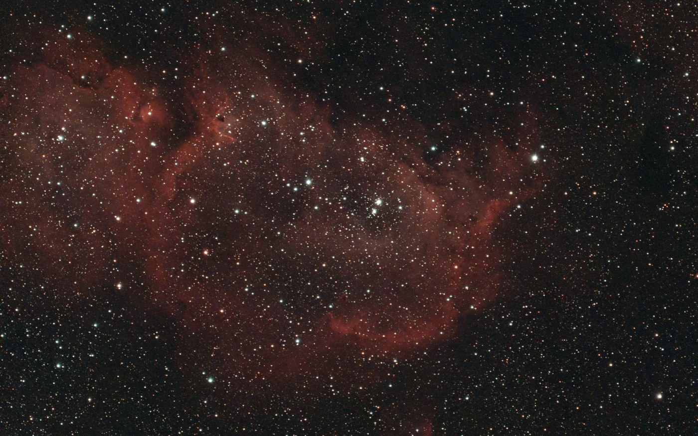
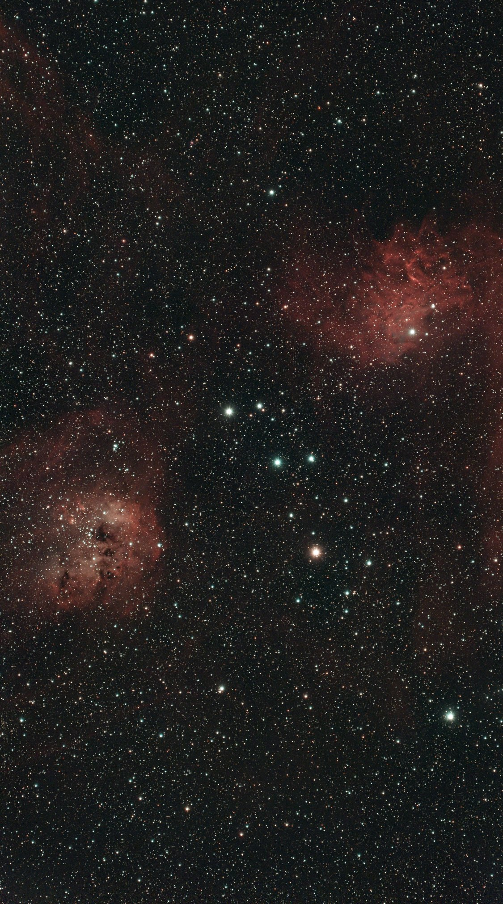
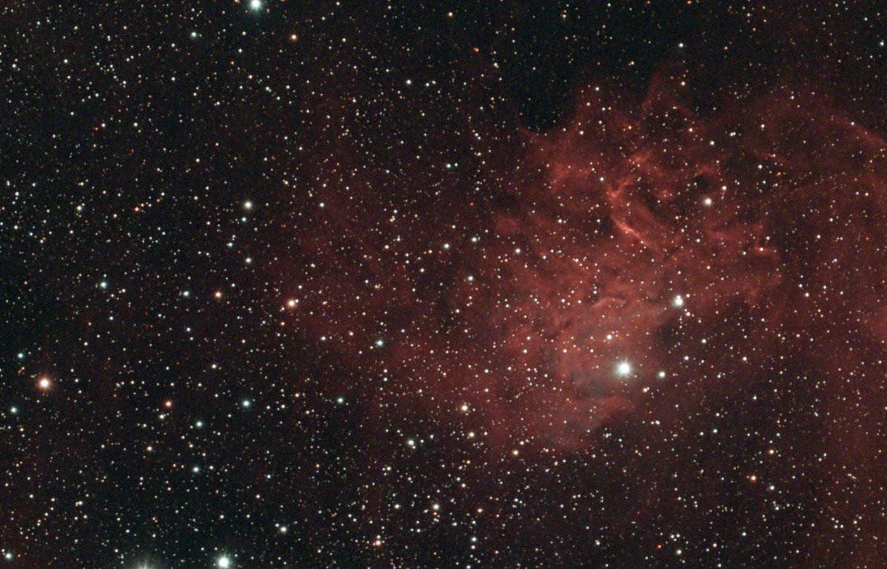
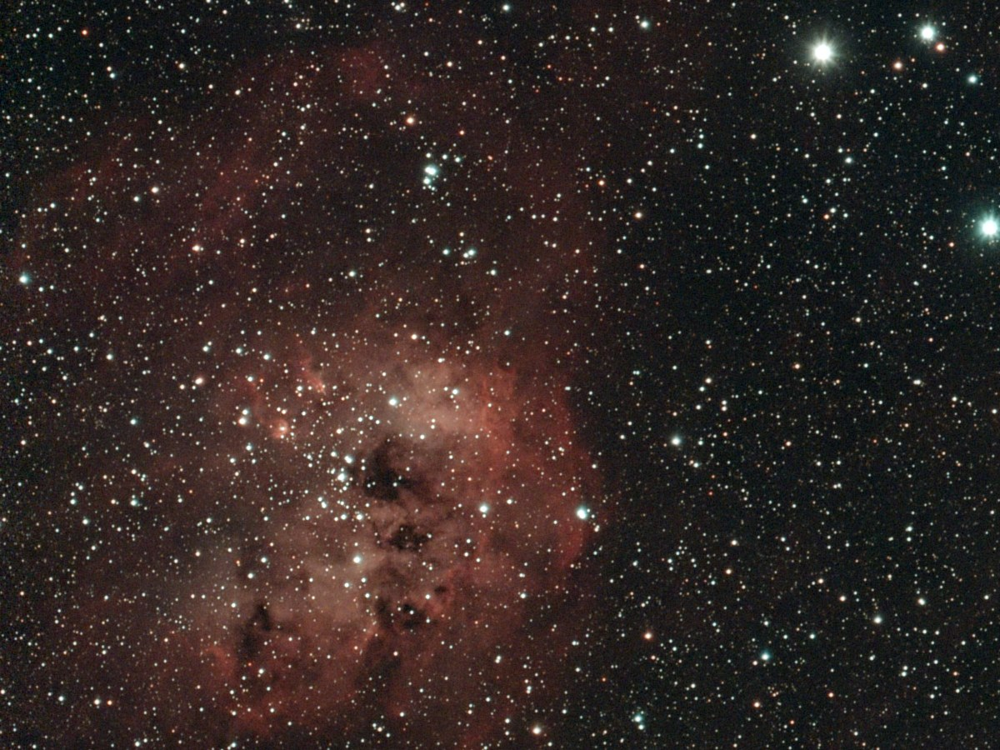
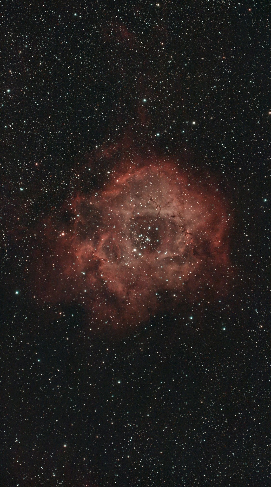
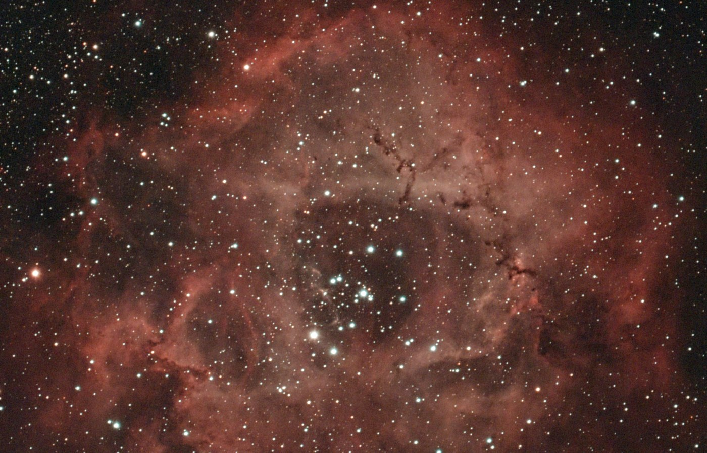

Night log · Friday 16 October 2026
Four nebulae in one clear night: the Soul, Flaming Star, Tadpoles and Rosette
The plan
All three weather models agreed: clear from dusk to dawn. With the Moon setting early, it was the first chance at a whole night, so we planned four targets for the Seestar S30 Pro, each one taken while it's highest and furthest from the house:
- Soul Nebula (IC 1848) in Cassiopeia, through the evening.
- Flaming Star (IC 405) and Tadpoles (IC 410) in Auriga, together in one frame, around midnight.
- Rosette Nebula (NGC 2244) in Monoceros, in the early morning. It only gets 39° up here, and the house is in the way below about 35°, so this was the gamble.
- Back to the Flaming Star until dawn.
- Captured
- 20:33–05:45
- Settings
- 20 s · gain 200 · dual-band
- Moon
- 34%, set about 21:00
- Mount
- TH10 wedge, EQ
Measuring the EQ wedge's polar alignment
A short shower came through just before dusk, which none of the forecasts had shown, but it cleared by dark. I aligned the wedge in the app, which reported it within 0.8° of the pole. On earlier nights the app's figure turned out to be wrong in both directions, so this time Claude checked it before the night began.
The method is old and simple. Point at a star, let the mount track it for five minutes, and see which way the star drifts. If the telescope's axis isn't aimed exactly at the pole, stars slowly drift north or south. Doing it at two places in the sky, due south and in the east, separates the two directions the wedge can be out. Claude plate-solved a frame every minute to measure the drift to a few arcseconds. The answer was 0.3°: the best alignment yet, and better than the app thought.
It also explained something from the last few nights. The pictures still crept slowly across the frame, but almost entirely east–west, the direction the mount turns to follow the sky. That's the mount tracking very slightly too slow or too fast, not the alignment. It's too small to blur a 20-second frame, and the scope re-centres itself every half hour anyway. The stars stayed round all night.
The night
It stayed clear from start to finish. Not one frame was lost to cloud. The only pauses were when the Rosette dipped behind the roofline twice, for about 10 minutes in all. The scope refocused seven times as the night cooled, took its dark frames at 05:45, and parked itself.
- Soul
- 401 × 20 s · 2 h 14 min
- Flaming Star + Tadpoles
- 567 × 20 s · 3 h 9 min
- Rosette
- 221 × 20 s · 1 h 14 min
- Lost to cloud
- none
The Soul Nebula (IC 1848)
The Soul is a cloud of hydrogen about 7,500 light years away and more than 100 light years across, lit up from inside by clusters of young stars. The bright rim along its lower edge is where their light is eating into the cloud, and the dark lanes are dust in front of the glowing gas. It sits next to the Heart Nebula in the sky, and together they're sometimes called the Heart and Soul.


The Flaming Star (IC 405) and the Tadpoles (IC 410)
These two are next to each other in the sky but nowhere near each other in space. The Flaming Star, top right, is about 1,500 light years away. Its bright star, AE Aurigae, is a runaway: it was flung out of the Orion star-forming region about two and a half million years ago and is now passing through this cloud, making it glow. The Tadpoles, at left, are about eight times further away, round a young cluster whose light is sculpting the gas.


Look closely at the Tadpoles and you can see them: dark knots of dust with pale tails, pointing away from the cluster. Each one is around ten light years long, and new stars may be forming inside them.

The Rosette Nebula (NGC 2244)
The gamble paid off. The Rosette is about 5,000 light years away and 130 light years across. The hollow in the middle has been blown out by the hot young stars of the cluster there, NGC 2244, whose light and winds are pushing the gas outwards. Even at only 39° up, and with just over an hour, it came out clearly.

At full resolution the middle of the Rosette shows small dark specks and threads. These are globules of dust and gas dense enough to survive the starlight for now. Some may collapse to form new stars before they're worn away.

What went wrong
One thing, and it was in the processing, not the telescope. The office computer starts on a target once no new frames have arrived for ten minutes, which normally means the target is finished. The Flaming Star had a break of two hours while the scope was on the Rosette, so the computer processed it then, using 397 frames, and missed the last 170. Claude reprocessed it with all 567 in the morning, and changed the toolkit so the night runner now marks each target with the time of its last session. The computer waits until then.
The Rosette deserves more time, ideally when it's higher later in the winter. The Flaming Star and Tadpoles could also do with a slightly different framing next time: the Flaming Star sits close to the edge of this one. (Both got a second go the next night.)